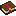

Steel Ball RunСтальной
шар
Шар Джайро Цеппели. Держишь ПКМ — раскручиваешь, отпускаешь — летит. Заряженный вгрызается в моба и сверлит его, отскакивает от стен, а потом сам возвращается в руку. Незаряженный придётся подбирать, иначе через 10 секунд он рассыплется.
Крафт
Восемь изумрудов вокруг железного блока. Шар лежит во вкладке «Бой», в стак не складывается: один шар — одна ячейка.
Зачаровывается как алмазный инструмент (сила 10), но из всех зачарований на него встаёт только своё — Ball Breaker.
Бросок
Физика взята из кода шара один в один: гравитация 0,075, сопротивление воздуха, отскоки от пола и стен, трение о землю, сверление и возврат. Зажми на поле (или кнопку), целься курсором, отпусти.
Сколько держать
Заряд растёт как у лука: за первую секунду кривая быстро набирает, дальше держать бесполезно. Ровно на 20-м тике шар становится заряженным: скорость подскакивает, разброс почти пропадает.
Ball Breaker

Ball Breaker Стальной шар · макс. уровень I- Сразу полный заряд. Даже тап ПКМ — это бросок на максимуме, без разброса, и ещё +0,35 к скорости.
- Сверлит вдвое дольше. 60 тиков вместо 30, по 4,5 урона каждые 4 тика. На бумаге это 15 ударов, но после попадания у моба полсекунды неуязвимости, так что проходит примерно каждый третий.
- Не бьётся. Там, где обычный шар через 10 секунд рассыпается, этот просто летит домой.
- Возвращается сквозь стены и сам ложится в пустую руку, основную или вторую.
- Закручивается сильнее. Боковая сила Магнуса ×1,8: шар заметно уводит в сторону вращения.
Вернётся ли шар
Шар живёт 200 тиков, 10 секунд. Не успел вернуться за это время — рассыпается искрами железа, и в инвентарь уже не придёт. Выбери бросок и чем он кончился.
Полевые заметки
Версии
Достижения
Вращение — это всё.
Урок пятый усвоен.